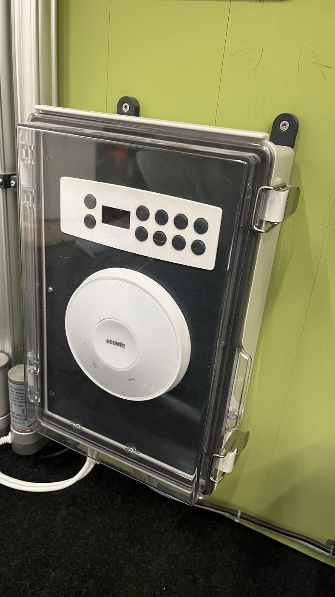
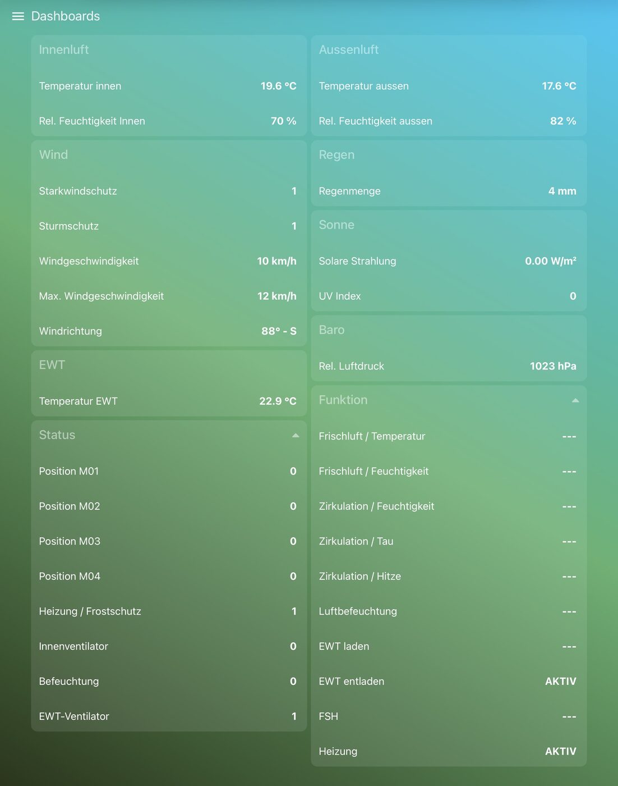
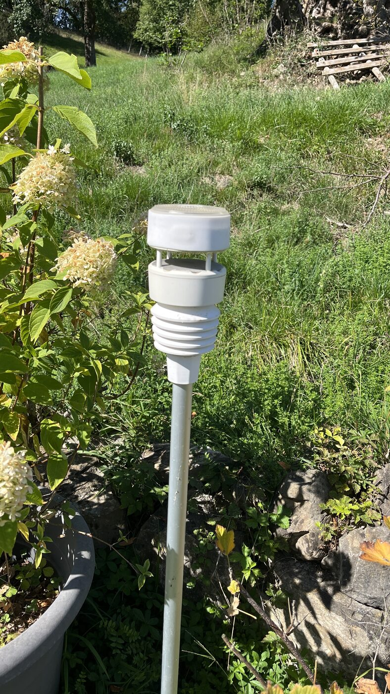

Beibehalten
Zwei Zonen, lokale Autonomie, Außenwetter, aktive Lüftung, Schutzlogik, robuste Handbedienung und Gartenschlauchtauglichkeit.
Greenhouse Assistant · Marktanalyse 2026
Neubewertung des Greenhouse Assistant: drei Jahre Echtbetrieb, zwei Zonen und ein klarer Platz zwischen Eigenbau und professioneller Projektanlage.
06 · Klare Empfehlung
Greenhouse Assistant muss nicht neu erfunden oder funktional verkleinert werden. Er muss als klarer Warenkorb, mit belastbarem Gesamtpreis und eindeutiger Installationsgrenze kaufbar werden.
Zwei Zonen, lokale Autonomie, Außenwetter, aktive Lüftung, Schutzlogik, robuste Handbedienung und Gartenschlauchtauglichkeit.
Einen Controllerkern sowie ein klar definiertes Ein- und Zweizonenpaket mit Gesamtpreis, geprüften Komponenten und Online-Installationscheck.
Vorerst keine neuen Funktionsfelder. Zuerst Stückliste, Serienprüfung, Lieferumfang und Preis belastbar machen.
17 · Forschungsbasis
Hersteller und Behörden liefern Produktdaten, Preise und Markt-Randgrößen. Community-Quellen zeigen reale Probleme, aber keine repräsentative Häufigkeit. Marktgröße und Zahlungsbereitschaft bleiben dort Szenarien, wo belastbare Nenner fehlen.
07 · Marktstruktur
Unteres Ende
Günstig, flexibel, aber voller Eigenverantwortung.
Oberes Ende
Robust und vollständig, aber projekt- und serviceorientiert.
Die Chance ist kein „neuer Klimacomputer“, sondern ein verständliches, standardisiertes Nachrüstsystem für hochwertige kleine Häuser.
08 · Voice of Customer
Überhitzung, Frost, offene Fenster bei Sturm, Bewässerungsfehler.
Kontrollfahrten, Handbewässerung und fehlende Urlaubsfähigkeit.
Unklare Zustände, widersprüchliche Geräte, verspätet bemerkte Ausfälle.
Qualitative Evidenz: Das Problem kommt vor. Häufigkeit und Zahlungsbereitschaft sind damit nicht bewiesen.
09 · Kundensegmente
Hochwertiges Haus, emotionale Bindung, technikoffen – aber keine Lust auf Eigenbau.
Stärkste Evidenz: Abwesenheit, Überhitzung, Sturm, DIY-Aufwand.
Arbeitszeit, Ertragssicherheit und mehrere Zonen statt Komfort.
Evidenzlücke: nur wenige klar gewerbliche Problemsignale.
Farm-to-table, Bildung, Spezialkulturen und klassische Erwerbsbetriebe.
Entweder zu wenig Evidenz oder etablierte professionelle Konkurrenz.
Das günstige Hobbysegment: Dort steht die Automation schnell in einem ungünstigen Verhältnis zum Wert des Gewächshauses.
10 · Wettbewerbsbild
| Kaufalternative | Warum sie gewählt wird | Schwäche | Einordnung |
|---|---|---|---|
| Manuell + passive Öffner | Billig, bekannt, kein Setup | Keine kombinierte Reaktion auf Hitze, Sturm und Abwesenheit | Wichtigster direkter Ersatz |
| Eigenbau / Smart Home | Offen, flexibel, günstige Standardkomponenten | Integration und Verantwortung bleiben beim Nutzer | Direkt für technisch versierte Käufer |
| Harvst ↗ | Kleine Systeme, Onlinekauf, eigene WLAN-Oberfläche | Fokus auf eigene Minihäuser und Bewässerung | Nächster sichtbarer Produktvergleich |
| NIDO ↗ / GrowControl ↗ | Kaufbare modulare Grow-Steuerungen | Indoor-/Fertigation-Fokus statt Fenster und Außenwetter | Angrenzende Alternative |
| Trellis Controls ↗ | Kleine bis mittlere Gewächshäuser, einfache Bedienung | Noch kein belastbarer DACH-Produktbeleg | Früher, naher Marktindikator |
| Ridder ↗ / Senmatic ↗ / RAM ↗ | Vollständigkeit, Robustheit, Service | Projektlogik und Komplexität für kleine Privathäuser | Oberer Benchmark, nicht Kernkonkurrenz |
Die dünne direkte Konkurrenz ist eine Chance und ein Risiko: eine unbesetzte Lücke – oder eine Kategorie, deren Nachfrage noch nicht reicht. Der Prototyp sollte diese Lücke gezielt testen, nicht ihre Existenz voraussetzen.
11 · Vorläufiger Richtpreis
IP67-Controller samt Anschlüssen und Dokumentation; Wetterstation, Sensoren, Antriebe und objektspezifische Kabel separat.
Standardisierte Schutzanlage mit Wetterstation, Innenfühler, zwei Antrieben, Netzteil und Kabelsatz.
Gemeinsame Wetterstation, zwei Innenfühler, vier Antriebe und erweiterter Kabelsatz.
Vorläufige Endkunden-Richtwerte inklusive Umsatzsteuer für Deutschland/Österreich. Keine Angebote und noch nicht durch die eigene Stückliste abgesichert.
Ecowitt-Wetterstation, Standardsensoren und Netzteil dürfen Kunden selbst beschaffen. Der empfohlene Gesamtpreis muss trotzdem sichtbar bleiben.
Controller, robuste Schnittstellen, Plug-and-play-Kabel, geprüfte Kompatibilität, Dokumentation und Support.
Bei 2.990 EUR brutto bleiben bei 20 % USt. und 45 % interner Deckungsquote höchstens rund 1.370 EUR für alle variablen Kosten.
Der Richtpreis ist marktseitig plausibel. Ob er wirtschaftlich ist, entscheidet jetzt deine Stückliste – nicht weitere Wettbewerbersuche.
Vergleichsbeträge sind nicht funktionsgleich; USD und EUR wurden bewusst nicht umgerechnet. Lieferumfang und Herleitung stehen in der Preisstrategie.
12 · DACH-Szenariomodell
Szenarien, keine Marktbehauptungen. Unbelegt sind vor allem Gewächshausquote und Premium-/Passungsquote. Das weite Szenario ist eher mathematische Obergrenze als Planungswert.
01 · Deine Marktposition
Ein zweizoniges Schutz- und Klimasystem, dessen dargestellte Funktionen seit drei Jahren im realen Gewächshaus laufen.
Das online kaufbare, gartenschlauchtaugliche Plug-and-play-System für hochwertige kleine Gewächshäuser.
Mehr Systemverantwortung als Eigenbau, weniger Projektaufwand als professionelle Gewächshausautomation.
Der Produktfit ist deutlich stärker als bisher angenommen: Außenwetter, aktive Fenster, lokale Regeln, Handbedienung und zwei Zonen sind nicht nur geplant, sondern im Echtbetrieb.
Marktgröße und Zahlungsbereitschaft bleiben unbewiesen. Produktseitig fehlen vor allem standardisierte Warenkörbe, Stückkosten und dokumentierte Serienprüfungen.
02 · Was heute belegt ist



Damit ist nicht mehr die technische Grundidee die zentrale Hypothese. Die offene Frage lautet, ob genügend Käufer dieses robuste Gesamtpaket zum nötigen Preis wollen.
Fotos, Laufzeit, Schutzart und Funktionsbetrieb sind Gründerangaben beziehungsweise bereitgestellte Prototypbelege; keine unabhängige Serien- oder Schutzprüfung.
04 · Empfohlene Paketfamilie
IP67-Controller samt Anschlüssen, 12/24-VDC-Versorgung, vier Motorkanäle, lokale Bedienung und alle bereits real betriebenen Schutzfunktionen.
Richtpreis: ca. 2.990 EUR
Richtpreis: ca. 3.990 EUR
Nicht die Zahl der Funktionen trennt Produkt und Prototyp. Entscheidend sind ein vorhersehbarer Warenkorb, selbsterklärende Verkabelung und eine klare Aussage, was ohne individuelle Planung passt.
Heizung, Befeuchter, Ventilatoren, EWT, mechanische Sonderadapter und Montage bleiben objektspezifische Optionen. Preise sind vorläufige Marktanker, keine Angebote.
05 · Waschbarkeit als Marktposition
Viele Vergleichsprodukte sind nicht einmal für direktes Spritzwasser freigegeben. Eine nachweislich waschbare Gesamtinstallation kann deshalb eine echte, verständliche Differenzierung sein.
Professionelle Systeme können den Schutz an Schaltschrank und Installationsplanung delegieren. Für ein online gekauftes Nachrüstprodukt ist ein vollständiges Wash-down-Versprechen deutlich wertvoller.
| Produkt | Herstellerangabe | Was das praktisch bedeutet |
|---|---|---|
| GrowBase ↗ | IP42 | Kein Nachweis für direktes Abspritzen |
| NIDO ONE V2 ↗ | Von Spritzwasser fernhalten | Nur mit feuchtem Tuch reinigen |
| OpenSprinkler ↗ | Gehäuse nicht wasserdicht | Zusätzliches Schutzgehäuse nötig |
| Senmatic LCC1 ↗ | IP65 | Wasserstrahl, nicht Hochdruckreinigung |
| Ecowitt WS90 ↗ | IPX5 | Wetterfester Außensensor; Reinigungsbedingungen separat definieren |
Wasserstrahl beziehungsweise starker Wasserstrahl: passende Zielklasse für definierte Gartenschlauchreinigung.
Eigene Prüfklasse für Hochdruck-/Heißwasserreinigung. IP66 allein reicht dafür nicht.
Gehäuse, Display, Stecker, Schutzkappen, Kabel, Sensoren und Montage müssen gemeinsam bestehen.
Gartenschlauchreinigung ist zugesagtes Produktmerkmal. Der Controller samt Anschlüssen ist nach Gründerangabe IP67; Strahl, Abstand, Winkel und Betriebszustand müssen für das Serienversprechen noch eindeutig dokumentiert und geprüft werden.
Direkte Hochdruckreinigung. Sie bleibt ein separates mögliches Produktniveau und darf nicht aus IP67 abgeleitet werden.
Der Reinigungsfall stammt derzeit aus Gründererfahrung; seine Häufigkeit und Mehrzahlungsbereitschaft sind noch nicht extern quantifiziert.
03 · Mögliche Produktgrenzen
12/24 VDC, offene Software und freie Komponentenwahl. Hohe Reichweite, aber schnell hoher Supportaufwand.
Gut für Maker – allein noch kein einfaches Produkt.
Zweizonenfähiger Controller und Stecksystem als Kern; geprüfte Sensoren, Netzteile, Kabel und Aktoren wahlweise im Shop oder transparent extern.
Beste Übereinstimmung mit der Marktlücke.
Planung, Mechanik, Netzanschluss und Inbetriebnahme aus einer Hand.
Passt nicht zum gewünschten reinen Onlinehandel.
Option B: ein standardisierter Niedervolt-Kern mit offener Dokumentation. Kein eingebautes 230-V-Netzteil; stattdessen kompatible, zertifizierte Netzgeräte und klare Installationsgrenzen.
13 · Unit Economics
| Paketpreis brutto | Netto bei 20 % USt. | Max. variable Kosten bei 45 % Deckungsquote | Einordnung |
|---|---|---|---|
| 1.690 EUR | 1.408 EUR | 775 EUR | Controllerkern |
| 2.990 EUR | 2.492 EUR | 1.370 EUR | Einzonen-Referenzanlage |
| 3.990 EUR | 3.325 EUR | 1.829 EUR | Zweizonenanlage |
Reine Sensitivität mit interner Prüfmarke; keine validierte Marge. Variable Kosten müssen Hardware, Fertigung, Verpackung, Versand-/Zahlungsanteil, Gewährleistungsreserve und zurechenbaren Support abdecken.
Hardware, Partner, Installation, Fahrt, Garantie und Support.
Planung, Angebotsrevision, Inbetriebnahme und Gründerzeit dürfen nicht null sein.
Wenige Varianten, Ferndiagnose, kompatible Antriebe und klare Installationsgrenzen.
14 · Kanalhypothese
Konfigurator, Kompatibilitätsmatrix, Installationscheck, transparente Gesamtstückliste und klare Ausschlusskriterien.
Hervorragende Schritt-für-Schritt-Doku, kurze Videos, eindeutige Stecker, Router-artiges Funk-Pairing und Selbsttest.
Ferndiagnose, Ereignisprotokoll, Downloads, Updates, Wissensbereich und sauber begrenzter Support.
EWT-Berechnungstools, Ganzjahres-Gewächshauswissen, ehrliche Erfahrungsberichte und später Kundenstimmen können qualifizierte Reichweite aufbauen. Das ist ein plausibler SEO-/Vertriebshebel, noch kein belegter Akquisitionskanal.
Optionaler Elektriker oder Montagepartner bleibt möglich, ohne dass daraus ein Partnervertrieb werden muss. Die individuelle Mechanik darf jedoch nicht stillschweigend zum unbezahlten Fernberatungsprojekt werden.
15 · Produktisierung
Sensor plausibel? Aktor wirklich bewegt? Endlage erreicht? Was geschieht nach Stromwiederkehr?
Fenstermechanik, Netzspannung, Kabelwege und Heizung machen aus einem Kit schnell ein Projekt.
IP66 bedeutet starke Wasserstrahlen, nicht Hochdruckreinigung. Der Claim muss die geprüften Bedingungen nennen.
Elektrische Sicherheit, EMV, Funk, Maschinenintegration und Cyber Resilience müssen zur endgültigen Produktgrenze geprüft werden.
Freie Komponentenwahl kann Supportfälle vervielfachen. Offizieller Support braucht getestete Fabrikate, Versionen und klare Grenzen.
Fehlkäufe, Rücksendungen und individuelle Einbausituationen können die Hardwaremarge aufzehren, wenn Vorqualifizierung und Diagnose fehlen.
Lieferumfang, Prüfversprechen und Herstellkosten sind jetzt wichtiger als weitere Funktionen.
16 · Empfohlener nächster Pfad
Controller, Stecker, Kabel, Netzteil, Wetterstation, Sensoren, Antriebe, Fertigungszeit und Reserven für Ein- und Zweizonenpaket erfassen.
Für 1.690, 2.990 und 3.990 EUR exakt festlegen: enthalten, extern beschafft, optional und ausgeschlossen.
Reinigungsbedingungen für Controller, Stecker, Kabel und unterstützte Sensoren verbindlich beschreiben und prüfen.
Konfigurator, Gesamtpreis, Installationscheck, Dokumentation und Ausschlusskriterien als Teil des Produkts aufbauen.
Prüfen, ob nach Fertigung, Versand, Gewährleistung und Support bei den Richtpreisen ein tragfähiger Deckungsbeitrag bleibt.
18 · Schlussfolgerung
Die Neubewertung spricht für ein online kaufbares, lokal autonomes und gartenschlauchtaugliches Schutzsystem mit einem zweizonenfähigen Controller. Die nächste harte Entscheidung ist nicht Software, sondern ob der Lieferumfang zu etwa 2.990 beziehungsweise 3.990 EUR wirtschaftlich darstellbar ist.
19 · Quellen & Vertiefung
Auswahl der wichtigsten Quellen. Das vollständige Register mit allen Wettbewerbs-, Markt- und Communityquellen steht im Quellenregister auf GitHub ↗.